第1章 AIを「社員」として使う
｜- AI＝リモート社員という考え方
- ／AIに任せられる仕事、任せられない仕事
- ／月数千円で労働力を持てる理由
ゼロからわかる AIひとり起業・無料セミナー
AIを使って、もっと自由な
生き方を
オンラインセミナー
参加無料こちらのLINEからお申し込みください
これは、働き方を変えたい美咲が
「AIに質問する側」から一歩進む物語です。
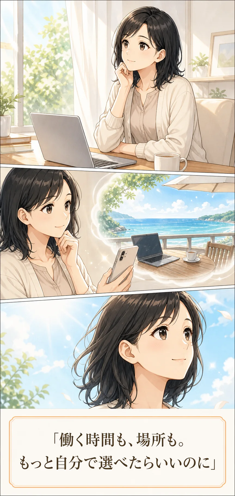
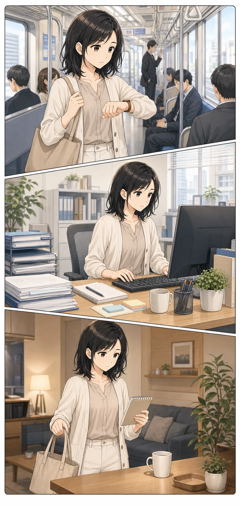
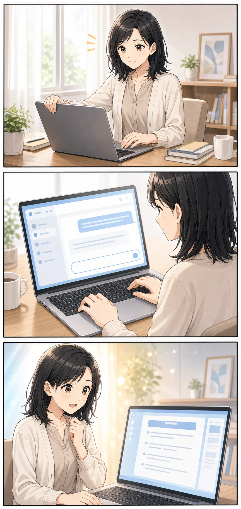
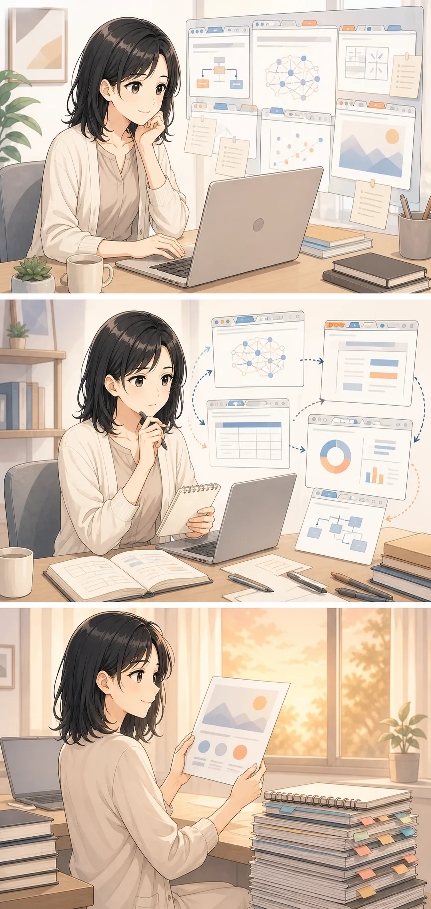
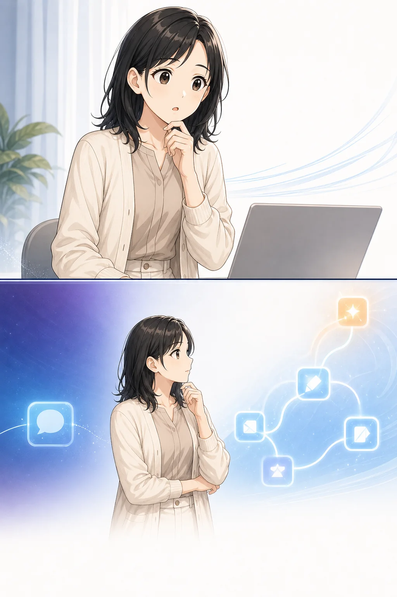
AIを便利な検索箱のまま使うのと、仕事を渡せる“社員”として使うのでは、結果がまったく変わります。
参加無料・セミナー参加で10大特典
今すぐ無料セミナーに申し込む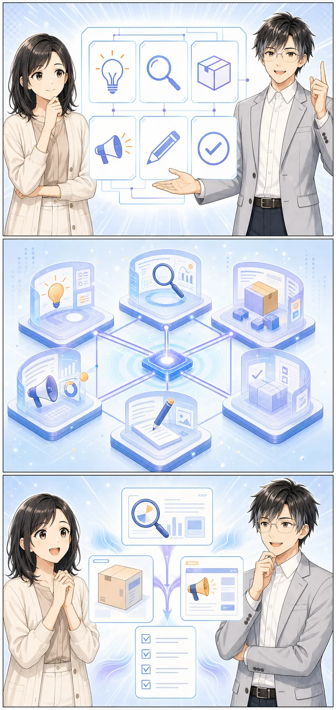
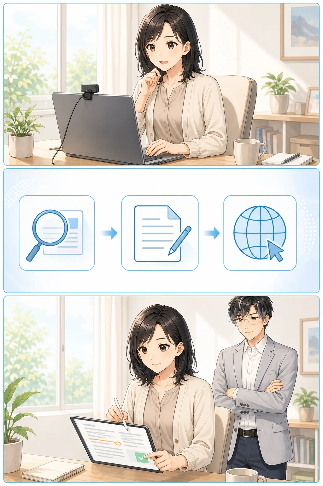
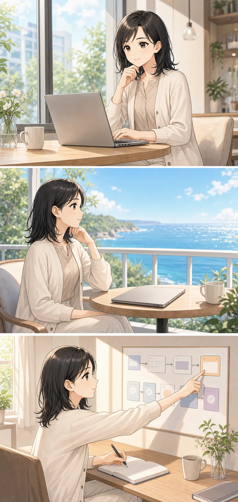
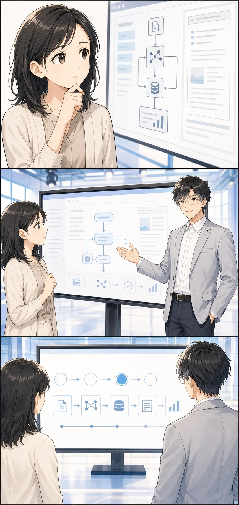
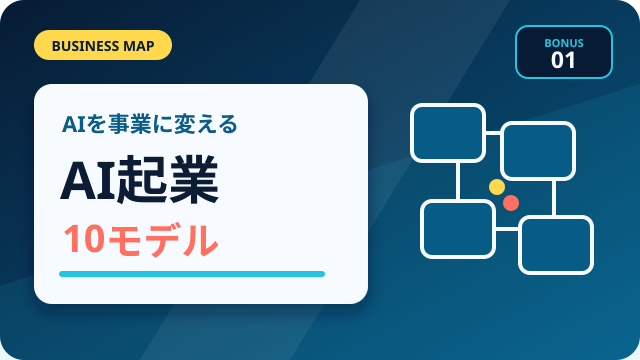
AI起業ビジネスモデル10選スライド
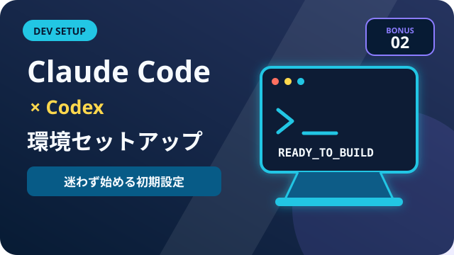
Claude Code・Codex環境セットアップ完全手順書
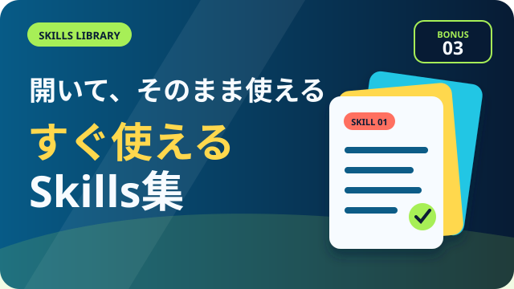
すぐ使えるSkills集
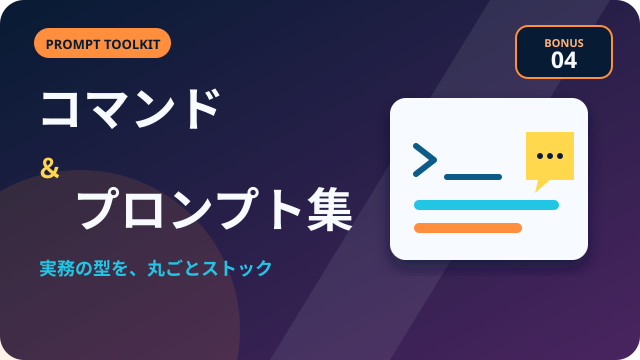
よく使うコマンド＆プロンプト集
無料勉強会・セミナー参加
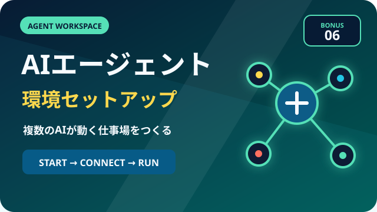
AIエージェント環境のセットアップ完全手順書
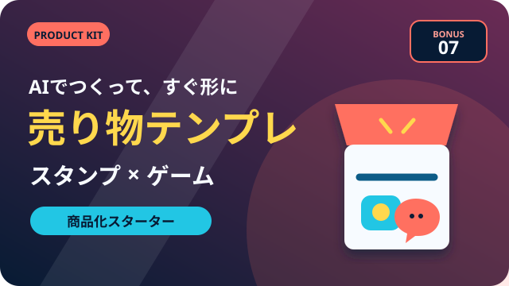
AIで作る売り物テンプレート（LINEスタンプ・ゲームの作り方マニュアル）
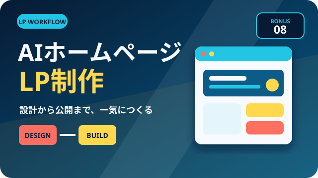
AIホームページ（LP）制作 完全手順書
AIショート動画作成 完全手順書
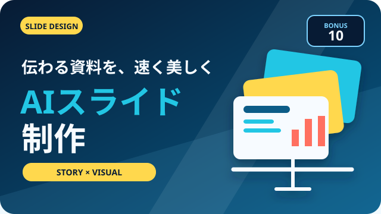
AIスライド完全手順書
参加無料・10大特典付き
今すぐ無料セミナーに申し込むこのセミナーは

ひとつでも当てはまったら、このセミナーが次の一歩になります。
このセミナーで
AIは、文章を返す道具から、パソコンの中で仕事をする労働力になりました。資料作成や調査はもちろん、ホームページやアプリの制作、外部サービスへの入力まで任せられます。

AIはもう、質問に答えるだけの道具ではありません。あなたの代わりに仕事を進める存在です。
AI社員に仕事を渡せば、自分は抱え込まず、「何をするか」を決める仕事に集中できます。働く時間も、行く場所も、誰と過ごすかも、自分で選べる暮らしをAIで作れます。
で、AIを活用した自由な働き方をお伝えします！
この先は、セミナーで扱う内容と、講師・参加者の実際の情報です。
専門用語ではなく、実際の画面と日本語の指示で説明します。
難しい専門知識は必要ありません。長い指示も音声で話しかければ動き、実演を見ながら仕事の渡し方を理解できます。
「本当にここまでできるの？」を、その場で動かしてお見せします。
資料作成からホームページ制作、外部サービスへの入力まで実演。AIに何を任せられるかを具体的に持ち帰れます。
自分が手を動かし続けず、選べる時間を増やすための話です。
社員ゼロ、在宅、匿名、自分のペース。働く時間も場所も、誰と過ごすかも、自分で選べる未来を具体的に描けます。
Xeno magic株式会社 代表取締役／AIエージェント組織の実践者
開成中学・高校、東京大学数学科を経て在学中に起業。その後、ベンチャー企業でゼロから事業を立ち上げ、成長させ、最終的に約7億円での会社売却を経験しました。現在はAIエージェントを組織として事業へ組み込み、少人数で複数事業を運営。その事業では、前年年商3億円超を達成しています。また、Claudeを開発するAnthropicの公式学習サイト「Anthropic Academy」で、受講時点に公開されていた13講座をすべて修了し、13枚の修了証を取得。法人向けAI研修・導入支援、AI起業家への投資と事業支援も行っています。セミナーでは、AIを便利なツールとして紹介するだけでなく、AI社員へ仕事を渡し、自分は指示・確認・判断に集中する仕組みを、実際の画面で解説します。
講師自身の実績をもとに、AI社員の作り方と仕事の渡し方を、初めての方にもわかる言葉で具体的に解説します。
今まで ChatGPT しか触っていなかったのですが、Claude Code や Codex を使うことで、AI の可能性に改めて気づかされました。これは人から言われないとわからないことだったので、知らず知らずのうちに自分で自分の可能性を狭めていたのだと思うと、もしこのままの状態で過ごしていたら……と考えただけでゾッとします。
これまで自分なりに色々と情報収集をしていましたが、やはり体系的に学ぶ方が、結果として圧倒的に習得が早いのだということに気づきました。
AI を使って事業を作ることはできるんだろうなと思いつつも、具体的に何から手をつけたらいいのかが分かりませんでした。今回それが明確になったことで、非常に貴重なインスピレーションを得ることができました。
これまでは AI を触ってみても「意外とこんなものか、大したことないな」と思っていました。しかし、ちゃんとしたやり方を教えてもらうと、ここまでクオリティが上がるのだと驚きました。AI のポテンシャルを引き出せるかどうかは、使う側の技量次第なのだということがよく分かりました。
子育てをしながら「何かやりたい」と思っていても、なかなかまとまった時間が取れず、もどかしい思いを抱えていました。そんな状況でも、AI が代わりに動いて仕事をしてくれるということに対して、強い安心感と大きな希望を手にすることができました。
大丈夫です。パソコン未経験の方でも全く問題ございません。
AIエージェント組織を作る考え方から、実際に事業を構築するところまで、実践的なお話をさせていただきます。
いいえ、無料です。専用LINEに登録後、開催日程から参加する回をご確認ください。
まず、AI一人起業という新しい働き方と、私たちの取り組みを知っていただくためです。セミナーの後半では、希望する方へスクールの内容をご案内します。あらかじめご了承ください。
講師自身も「匿名でできること」を条件に事業を作りました。社員ゼロ・在宅・匿名で、自分のペースで回す考え方を紹介します。
視聴できます。自分でも試す場合は、パソコンがあると操作しやすいです。
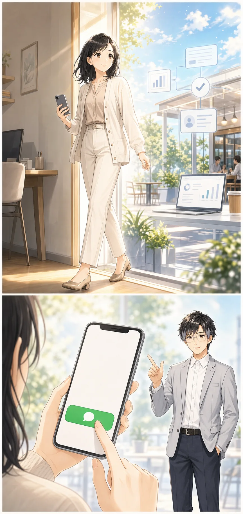
参加無料・セミナー参加で10大特典
今すぐ無料セミナーに申し込む LINEを追加後、セミナーの案内をお送りしますAI起業ビジネスモデル10選スライド
Claude Code・Codex環境セットアップ完全手順書
すぐ使えるSkills集
よく使うコマンド＆プロンプト集
無料勉強会・セミナー参加
AIエージェント環境のセットアップ完全手順書
AIで作る売り物テンプレート（LINEスタンプ・ゲームの作り方マニュアル）
AIホームページ（LP）制作 完全手順書
AIショート動画作成 完全手順書
AIスライド完全手順書
参加無料・10大特典付き
今すぐ無料セミナーに申し込むセミナー参加で豪華特典を受け取る
今すぐ無料セミナーに申し込む